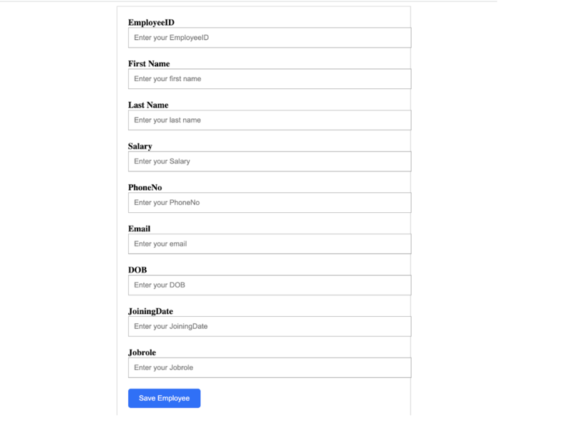
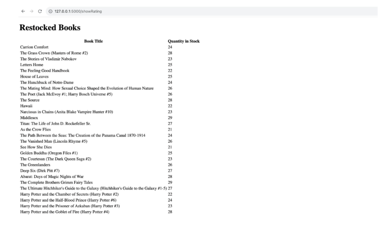
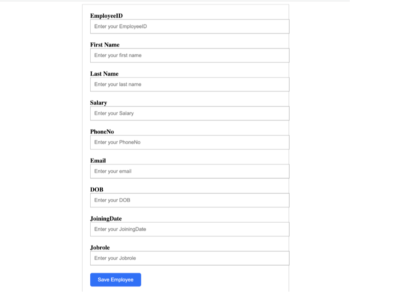
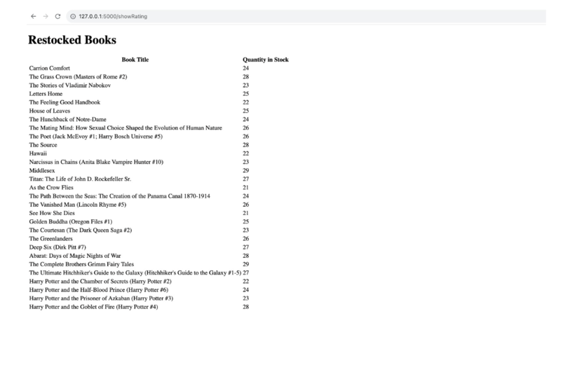

SMART BOOK RECOMMENDATION AND RESTOCK SYSTEM
 



The Smart Book Recommendation & Restock System addresses several challenges faced by bookstores, focusing on improving efficiency, customer satisfaction, and inventory management. It provides features like Accurate Book Rating Prediction, Personalized Book Recommendations that aid the admin in restocking, hence reducing over or under stocking and provides the buyers with recommendations.
Technology Stack Used:
- Frontend: HTML/CSS/JS
- Backend: Python/Flask
- Database and ORM: MySQL, SQLAlchemy
- ML Models/Algos: Random Forest, K-means Clustering
- Developed a comprehensive Bookstore Management System utilizing Python, Flask, and HTML/CSS/JS to facilitate efficient browsing, ordering, and order tracking for a vast catalog of over 5,000 books.
- Employed four machine learning models, with Random Forest achieving an impressive 98.55% accuracy in predicting book ratings, thereby assisting administrators in restocking decisions and reducing instances of overstocking and understocking by 30%.
- Additionally, engineered a sophisticated recommendation system using K-means clustering to provide personalized book suggestions, enhancing the user experience and driving engagement. Integrated MySQL with Object Relational Mappers like SQLAlchemy to optimize database interactions and ensure seamless data management.